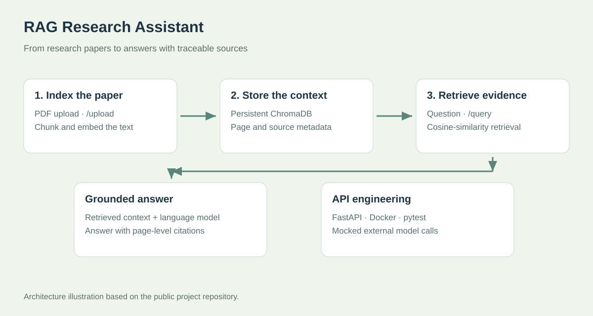

AI Developer
BC Cancer
Making chatbot quality easier to evaluate.
100standardized Q&A pairs
400scores per model version

Explore the work
- Evaluation engineering. Build a Python evaluator using 100 standardized Q&A pairs, expert answers, intent labels, and risk metadata so clinical reviewers can compare chatbot responses consistently.
- RAG and NLP quality. Measure retrieval relevance, grounding, citation accuracy, completeness, and context retention. Four evaluator types produce up to 400 comparable scores per model version.
- Reliability and review. Evaluate five safety dimensions, flag failures, route uncertain outputs to experts, and track regressions across four delivery channels.